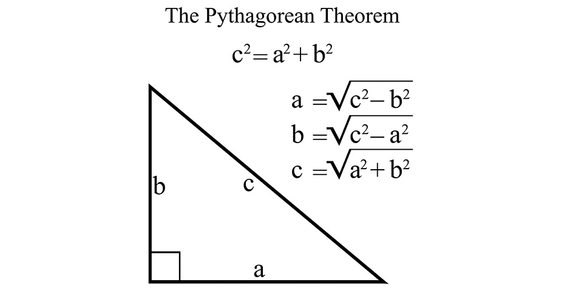
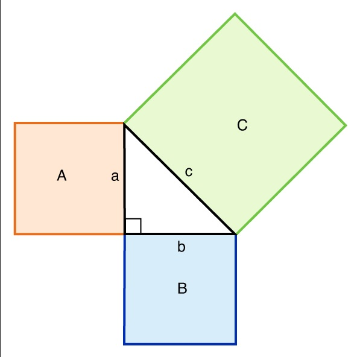

Равенки:
Равенка за хипотенуза: $$a^2 + b^2 = c^2$$
Равенка за страната a: $$c^2 - b^2 = a^2$$
Равенка за страната b: $$c^2 - a^2 = b^2$$
Теорија за Питагорова теорема
Питагорова теорема: Збирот на плоштините на двата квадрати од катетите (a и b) е секогаш еднаков на плоштината на квадратот од хипотенузата (c).
Овозможува едноставна релација меѓу трите страни на еден правоаголен триаголник, така што ако должината на две страни од триаголникот се познати, должината на третата страна може да се најде. Генерализација на оваа теорема е косинусната теорема, која овозможува пресметување на должината на третата страна од каков било триаголник, ако се познати должините на две страни и големината на аголот меѓу нив. Ако аголот помеѓу двете страни е прав агол, тогаш ова се намалува до Питагорина теорема.
Калкулатор за Питагорова теорема
НАПОМЕНА! Овај калкулатор прави пресметки само за хипотенузата (страната c). Резултатот е заокружен на две децимали.